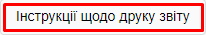
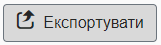

|
<< Click to Display Table of Contents >> Navigation: 2. Оцінювання у відповідності до вимог NIST Special Publication 800-53 > 2.5. Звіти |
Після завершення оцінювання користувач може створювати та друкувати звіти про результати.
Метою функції звітування є можливість друкувати та публікувати інформацію про оцінювання, включаючи підсумкові діаграми та списки. Також надає друковану копію результатів для використання на зустрічах, для зв'язку з керівництвом і як спосіб призначення завдань технічному персоналу.
У поєднанні з онлайн-аналізом ці звіти можуть допомогти користувачеві чітко зрозуміти, де є слабкі місця та де слід зробити покращення.
Звіти відображаються на вкладці Результати.
Вказано дату останнього оновлення опитувальників оцінювання, а також повідомлення про те, що будь-які звіти, які були запущені до цього оновлення, можуть не відображати поточний стан оцінювання
Тутже вказано гіперпосилання на відривні аркуші спостережень.
Звіти можна роздрукувати або зберегти у форматі *.pdf. Для цього активуйте дії по гіперпосиланню 
У даному розділі отримується інформація про наступні звіти за результатами оцінювання готовності до впливу програм-вимагачів:
•Виконавчий підсумок,
•Підсумковий звіт сайту,
•План кібербезпеки сайту,
•Детальний звіт про сайт.
Для експорту результатів оцінювання активуйте дії по кнопці - 
Результати оцінювання експортуються у файл формату *.csetw.
підготовлено у редакторі Help & Manual 9.3.0
{kind=link}